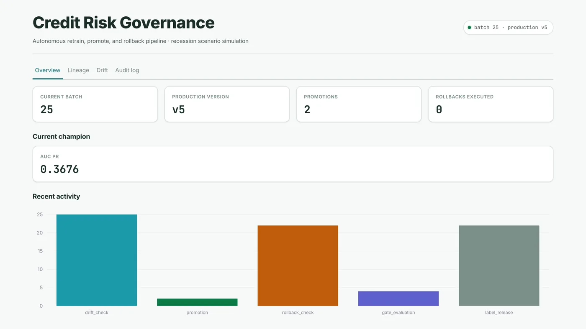
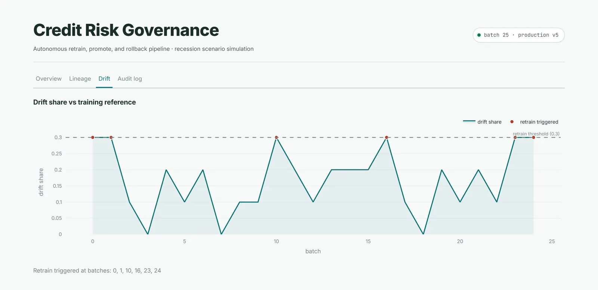
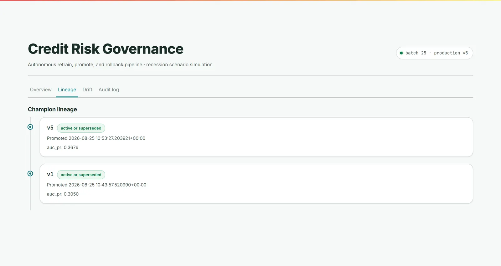

01
Continuous Credit Risk Governance Pipeline
A self-governing MLOps pipeline that runs the full credit-risk model lifecycle end to end: drift detection, retraining, statistical gating, promotion, rollback, with no human in the loop.
- 01637 live batches over 150K+ credit records, zero manual intervention.
- 02Tuned drift threshold cut false retrain triggers from about 40% to about 1%, without missing real injected drift.
- 03Three-gate promotion: a tolerance band, strict dominance, and McNemar or bootstrap significance testing.
- 04Rollback is held to the same bar, confirmed by a bootstrap CI rather than one bad batch.
- 0555 automated tests audit every governance decision, including the ones that changed nothing.
AUC-PR is tracked over accuracy given the low positive rate, and every decision, including rejections and suppressions, lands in a Postgres audit trail.
governance / overview



Overview: current champion, batch clock, promotions and rollbacks.